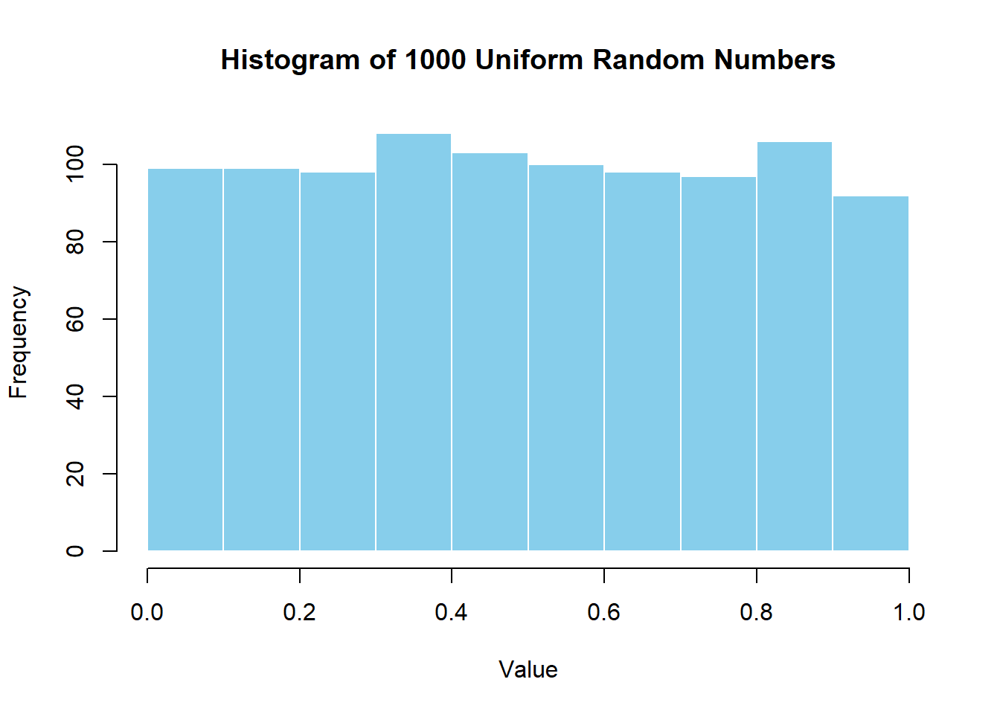
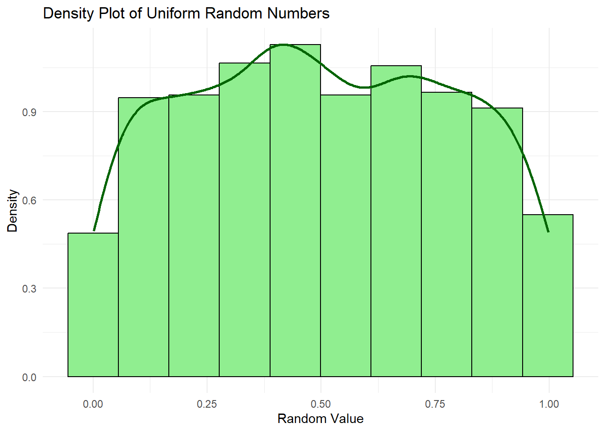
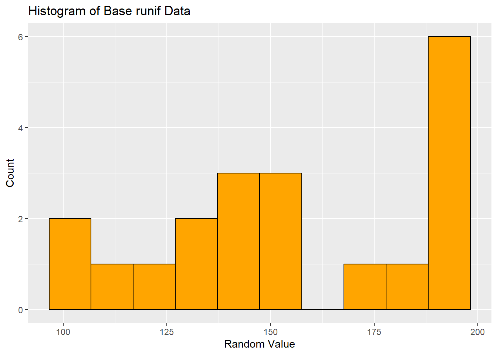
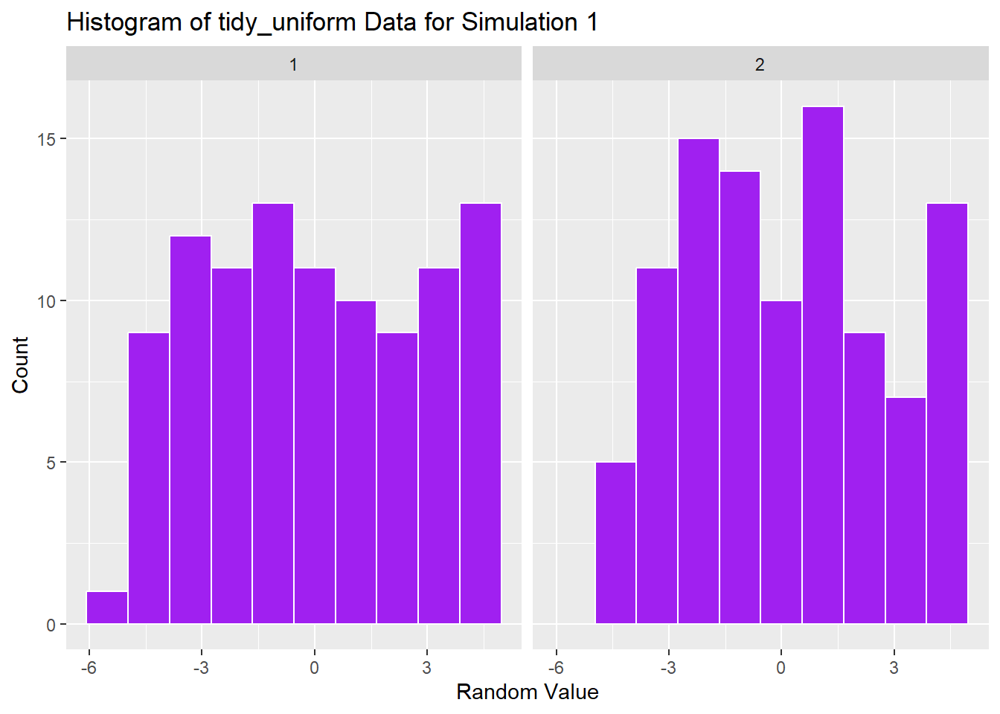
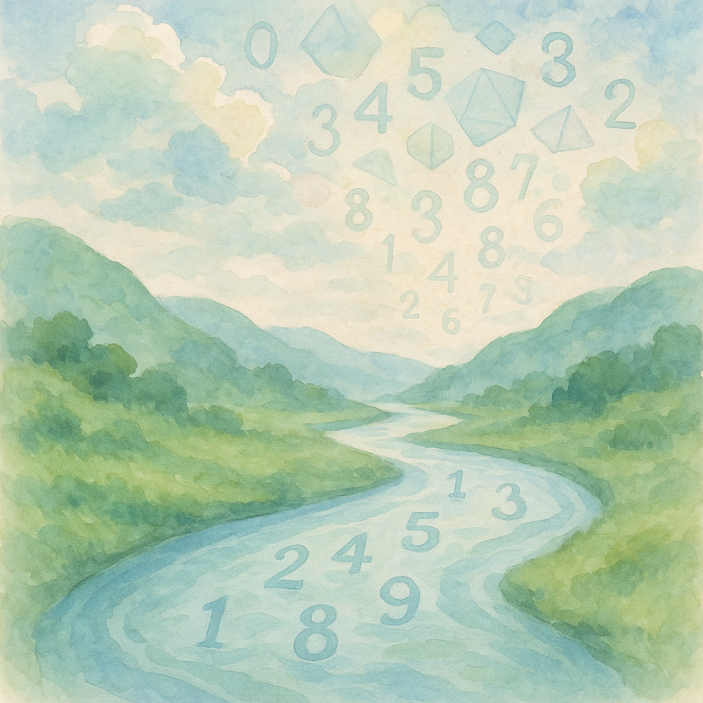

# Generate 10 random numbers between 0 and 1
random_numbers <- runif(10)
print(random_numbers) [1] 0.56950515 0.05280470 0.93456266 0.94666336 0.12624613 0.91760251
[7] 0.31070386 0.34947432 0.94835471 0.08980481Steven P. Sanderson II, MPH
June 17, 2025
Programming, runif function in R, uniform distribution in R, R random number generation, tidy_uniform function, R runif examples, simulate random uniform numbers R, base R random sampling, R data simulation examples, ggplot2 uniform histogram, tidyverse random generation, how to use runif function in R with examples, generating uniformly distributed random numbers in R, runif versus tidy_uniform comparison in R, creating tibble of uniform data using tidy_uniform in R, detailed examples of runif function for simulation in R
Random number generation is a common task when working with simulations or sampling data in R. In this article, we explain how the runif function creates random values that follow a uniform distribution. We present several code examples to illustrate basic usage and a deeper exploration of generating random numbers. The article is split into two main parts. The first part explains the base runif() function, while the second part introduces a TidyDensity function—tidy_uniform()—that outputs uniformly distributed numbers in a tibble format. This discussion will help R programmers at every level apply these tools in data analysis and simulation tasks .
A uniform distribution is one where every value in a specified range is equally likely to occur. In R, the runif() function allows you to tap into this distribution by specifying the total number of samples, along with the lower and upper boundaries. For example, by default runif produces values between 0 and 1 when the boundary values are not provided. This even distribution of chance is useful in many statistical simulations and random sampling scenarios .
The base R runif() function is widely used to create random deviates that follow a uniform distribution. Its simple syntax is as follows:
Here,
• n represents the number of random points to be generated,
• min is the lower limit, and
• max is the upper limit of the distribution .
Below are several examples that demonstrate how to use runif() in practice for various purposes.
A straightforward application involves generating ten random numbers between 0 and 1. This is the default setting:
[1] 0.56950515 0.05280470 0.93456266 0.94666336 0.12624613 0.91760251
[7] 0.31070386 0.34947432 0.94835471 0.08980481This code creates ten random values that are evenly spread over the [0, 1] interval. This is useful for simple simulations or random sampling tasks.
Sometimes you require random numbers within a different range. In the following example, we generate 15 random values between 5 and 10:
# Generate 15 random numbers between 5 and 10
custom_numbers <- runif(15, min = 5, max = 10)
print(custom_numbers) [1] 9.794842 6.940247 5.189199 5.756394 7.077842 7.027128 9.026600 9.092483
[9] 7.000387 8.370060 5.425463 5.391901 6.242196 9.183011 9.277067By creating a sample over the [5, 10] interval, the code can be applied when using measurement units or settings where the numbers do not naturally fall between 0 and 1 .
For simulation studies or visual analysis, generating a large sample can help in understanding the distribution. Use this example to create 1,000 random numbers and plot a histogram to visually inspect the even spread.
# Generate 1,000 random numbers and plot the distribution
set.seed(123) # ensure reproducibility
large_sample <- runif(1000, min = 0, max = 1)
# Plotting the histogram
hist(large_sample, main = "Histogram of 1000 Uniform Random Numbers",
xlab = "Value", col = "skyblue", border = "white")
The histogram should show an even distribution of numbers across the defined range. Visualizing the output reinforces understanding of the uniform nature of these values .
In many simulation tasks, you may require a custom function that uses runif() to generate uniform deviates as part of a broader algorithm. The following code shows how to embed runif() within a simulation scenario:
# Define a simulation function using runif()
simulate_uniform <- function(simulations, points) {
results <- numeric(simulations)
for (i in 1:simulations) {
# Generate a sample of random numbers and compute the mean
sample_values <- runif(points, min = 10, max = 20)
results[i] <- mean(sample_values)
}
return(results)
}
# Run the simulation with 50 iterations; each iteration has 100 uniform random numbers
simulation_results <- simulate_uniform(50, 100)
print(simulation_results) [1] 14.79126 14.94206 14.98547 14.48088 15.49497 14.70642 15.16824 15.40201
[9] 15.29996 14.55437 14.91566 15.11270 14.87605 14.96450 14.67318 15.23566
[17] 14.74193 15.17651 15.21840 14.94577 15.26565 14.84095 15.00358 15.15409
[25] 14.77025 15.35455 15.03522 15.01672 14.86161 15.09590 15.26783 14.75215
[33] 14.63188 15.10038 14.79742 14.72019 15.04457 15.46613 14.13749 14.99490
[41] 15.28005 15.10991 14.79033 14.78180 15.05600 15.31129 14.53123 15.18169
[49] 15.11222 15.39883This function collects statistical summaries from repeated runs of random sampling. Such techniques are common in simulation-based inference or bootstrapping methods .
In addition to the classic runif() function in base R, the tidy ecosystem offers a cleaner, data-frame based approach to random number generation. The function tidy_uniform(), part of a collection of functions for generating various probability distributions, produces outputs as a tibble. This makes it easier to integrate with other tidyverse tools for further processing and visualization.
The tidy_uniform() function generates n random points from a uniform distribution over specified minimum and maximum values. It returns a tibble that includes columns such as:
• sim_number: Current simulation number
• x: The sample index
• y: The generated random number
• dx and dy: Values derived from density computations
• p and q: Values from the probability and quantile functions, respectively
This added information can be useful when exploring the distribution in more depth .
The first example with tidy_uniform() illustrates a simple call that returns a tibble. The following code snippet demonstrates how to generate 50 random numbers:
# Load necessary libraries
library(TidyDensity)
library(dplyr)
# Assuming tidy_uniform is available from your analysis package
# Generate a tibble with 50 random uniform values using tidy_uniform()
result_tbl <- tidy_uniform(.n = 50, .min = 0, .max = 1)
print(result_tbl)# A tibble: 50 × 7
sim_number x y dx dy p q
<fct> <int> <dbl> <dbl> <dbl> <dbl> <dbl>
1 1 1 0.440 -0.334 0.00153 0.440 0.440
2 1 2 0.397 -0.300 0.00371 0.397 0.397
3 1 3 0.372 -0.265 0.00832 0.372 0.372
4 1 4 0.529 -0.231 0.0172 0.529 0.529
5 1 5 0.0738 -0.196 0.0332 0.0738 0.0738
6 1 6 0.717 -0.162 0.0591 0.717 0.717
7 1 7 0.243 -0.128 0.0980 0.243 0.243
8 1 8 0.844 -0.0933 0.152 0.844 0.844
9 1 9 0.995 -0.0590 0.219 0.995 0.995
10 1 10 0.105 -0.0246 0.298 0.105 0.105
# ℹ 40 more rowsThe output is a tibble so this format makes it easier to integrate analyses across other tidy tools and pipelines.
Using tidy_uniform(), you can simulate several runs of random figures easily. Here is an example where we generate random numbers from 3 separate simulations:
# Generate a tibble with 3 simulation runs; each simulation has 30 random numbers
multi_sim_tbl <- tidy_uniform(.n = 30, .min = 2, .max = 8, .num_sims = 3)
print(multi_sim_tbl)# A tibble: 90 × 7
sim_number x y dx dy p q
<fct> <int> <dbl> <dbl> <dbl> <dbl> <dbl>
1 1 1 3.91 -0.383 0.000537 0.318 3.91
2 1 2 5.50 -0.0157 0.00208 0.583 5.50
3 1 3 2.31 0.352 0.00663 0.0513 2.31
4 1 4 3.50 0.720 0.0175 0.250 3.50
5 1 5 2.09 1.09 0.0383 0.0147 2.09
6 1 6 3.31 1.45 0.0708 0.218 3.31
7 1 7 5.14 1.82 0.112 0.524 5.14
8 1 8 3.98 2.19 0.155 0.330 3.98
9 1 9 6.45 2.56 0.194 0.741 6.45
10 1 10 7.73 2.93 0.223 0.956 7.73
# ℹ 80 more rowsRows: 1
Columns: 16
$ tidy_function <chr> "tidy_uniform"
$ function_call <chr> "Uniform c(2, 8)"
$ distribution <chr> "Uniform"
$ distribution_type <chr> "continuous"
$ points <dbl> 30
$ simulations <dbl> 3
$ mean <dbl> 5
$ median <dbl> 5
$ std_dv <dbl> 1.732051
$ coeff_var <dbl> 0.3464102
$ skewness <dbl> 0
$ kurtosis <dbl> 1.8
$ computed_std_skew <dbl> 0.08194513
$ computed_std_kurt <dbl> 1.915291
$ ci_lo <dbl> 2.087999
$ ci_hi <dbl> 7.85991Each simulation run is identified by the sim_number column, allowing for easy grouping and comparing between the different simulation runs .
The tibble output from tidy_uniform() can be directly used with ggplot2 for a more detailed visual analysis of the generated data. The following example shows how to plot the density of these random numbers:
# Load required libraries
library(ggplot2)
# Generate random uniform data using tidy_uniform()
data_tbl <- tidy_uniform(.n = 1000, .min = 0, .max = 1, .num_sims = 1)
# Plot the density of the random numbers
ggplot(data_tbl, aes(x = y)) +
geom_histogram(aes(y = ..density..),
fill = "lightgreen",
color = "black",
bins = 10) +
geom_density(color = "darkgreen", linewidth = 1) +
labs(
title = "Density Plot of Uniform Random Numbers",
x = "Random Value",
y = "Density"
) +
theme_minimal()Warning: The dot-dot notation (`..density..`) was deprecated in ggplot2 3.4.0.
ℹ Please use `after_stat(density)` instead.
This graph provides a visual confirmation of the uniform distribution of the random outcomes and shows how tidy data structures are easily integrated into visualization workflows .
For further statistical analysis, tidy_uniform() can be integrated with additional data processing steps. Consider the following example that computes summary statistics grouped by simulation number:
# Assume tidy_uniform() has generated a tibble called simulation_data
simulation_data <- tidy_uniform(.n = 100, .min = 5, .max = 15, .num_sims = 5)
# Summarize the data by simulation number
summary_tbl <- simulation_data %>%
group_by(sim_number) %>%
summarise(mean_value = mean(y),
min_value = min(y),
max_value = max(y),
median_value = median(y))
print(summary_tbl)# A tibble: 5 × 5
sim_number mean_value min_value max_value median_value
<fct> <dbl> <dbl> <dbl> <dbl>
1 1 10.2 5.02 14.9 10.0
2 2 9.90 5.05 14.8 9.64
3 3 9.97 5.27 14.9 9.78
4 4 10.1 5.01 14.9 10.3
5 5 9.66 5.10 14.7 9.92p <- c(0.025, 0.25, 0.5, 0.75, 0.95)
tidy_stat_tbl(simulation_data, y, quantile, "tibble", probs = p) |>
tidyr::pivot_wider(
names_from = name,
values_from = quantile
)# A tibble: 5 × 6
sim_number `2.5%` `25%` `50%` `75%` `95%`
<fct> <dbl> <dbl> <dbl> <dbl> <dbl>
1 1 5.31 7.42 10.0 12.9 14.6
2 2 5.13 7.73 9.64 12.5 14.0
3 3 5.55 7.80 9.78 12.3 14.1
4 4 5.27 7.51 10.3 12.8 14.6
5 5 5.36 7.11 9.92 11.4 14.0This grouping and summarizing is a typical step in data analysis pipelines when leveraging the tidyverse. The output provides insights into how the generated values vary between different simulation runs .
Now it is time for you to experiment with both approaches. Try the following exercise in your R console:
# Exercise Solution
# Part 1 - Using base runif()
set.seed(123)
base_data <- runif(20, min = 100, max = 200)
std_dev <- sd(base_data)
print(base_data) [1] 128.7578 178.8305 140.8977 188.3017 194.0467 104.5556 152.8105 189.2419
[9] 155.1435 145.6615 195.6833 145.3334 167.7571 157.2633 110.2925 189.9825
[17] 124.6088 104.2060 132.7921 195.4504[1] "Standard Deviation: 31.3471021463883"# Part 2 - Using tidy_uniform()
# Make sure that tidy_uniform() is available and the necessary library is loaded
set.seed(123)
tidy_data <- tidy_uniform(.n = 100, .min = -5, .max = 5, .num_sims = 2)
print(tidy_data)# A tibble: 200 × 7
sim_number x y dx dy p q
<fct> <int> <dbl> <dbl> <dbl> <dbl> <dbl>
1 1 1 -2.12 -8.06 0.000107 0.288 -2.12
2 1 2 2.88 -7.89 0.000178 0.788 2.88
3 1 3 -0.910 -7.73 0.000290 0.409 -0.910
4 1 4 3.83 -7.57 0.000461 0.883 3.83
5 1 5 4.40 -7.41 0.000717 0.940 4.40
6 1 6 -4.54 -7.25 0.00109 0.0456 -4.54
7 1 7 0.281 -7.08 0.00162 0.528 0.281
8 1 8 3.92 -6.92 0.00237 0.892 3.92
9 1 9 0.514 -6.76 0.00338 0.551 0.514
10 1 10 -0.434 -6.60 0.00472 0.457 -0.434
# ℹ 190 more rows# Part 3 - Plotting the histograms
library(ggplot2)
# Histogram for base runif data
base_df <- data.frame(value = base_data)
ggplot(base_df, aes(x = value)) +
geom_histogram(fill = "orange", bins = 10, color = "black") +
labs(title = "Histogram of Base runif Data", x = "Random Value", y = "Count")
# Histogram for tidy_uniform data (plot for the first simulation only)
ggplot(tidy_data, aes(x = y)) +
facet_wrap(~ sim_number) +
geom_histogram(fill = "purple", bins = 10, color = "white") +
labs(title = "Histogram of tidy_uniform Data for Simulation 1", x = "Random Value", y = "Count")
What is the syntax for the runif function in R?
The syntax is runif(n, min = 0, max = 1), where n is the number of observations and min and max define the range .
How can I generate random numbers between a specified range using runif()?
Simply pass the desired lower and upper limits as the min and max arguments, for example, runif(10, min = 5, max = 15).
What does the tidy_uniform() function return?
It returns a tibble containing multiple columns that include simulation identifiers and the calculated density and probability values. This output is handy for further tidyverse data processing .
Which method should I use: base runif or tidy_uniform?
If you work mostly in base R, runif() is straightforward and quick. However, if you are more familiar with tidyverse pipelines, tidy_uniform() offers a more integrated approach.
Can I visualize the output from these functions?
Yes, you can easily use packages like ggplot2 to plot histograms or density plots based on the random values generated by either runif() or tidy_uniform().
In this article, we have examined different ways to generate random numbers following a uniform distribution in R. You learned how to use the base runif() function to quickly generate random deviates and how to implement the tidy_uniform() function for a structured, tibble-based output that works well in data analysis pipelines.
Using these approaches, you can simulate data for testing, perform statistical analyses, and integrate the outputs seamlessly into your data visualization routines. Experiment with these examples and tailor them for your own projects. Feel free to comment on your experiences, ask questions, or share additional tips on how you use random number generation in your R code.
Happy coding and keep exploring the possibilities that R offers for simulation and data analysis!
If you found this article useful, please share your thoughts in the comments below and consider sharing the post on social media. Your feedback helps us create posts that truly help fellow R programmers explore and enhance their skills.
By following the examples and explanations provided here, you will be well equipped to generate uniform random numbers using both the base runif() function and the tidy uniform approach. Enjoy your data analysis and simulations in R!
Happy Coding! 🚀

You can connect with me at any one of the below:
Telegram Channel here: https://t.me/steveondata
LinkedIn Network here: https://www.linkedin.com/in/spsanderson/
Mastadon Social here: https://mstdn.social/@stevensanderson
RStats Network here: https://rstats.me/@spsanderson
GitHub Network here: https://github.com/spsanderson
Bluesky Network here: https://bsky.app/profile/spsanderson.com
My Book: Extending Excel with Python and R here: https://packt.link/oTyZJ
You.com Referral Link: https://you.com/join/EHSLDTL6